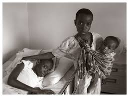
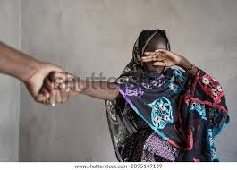
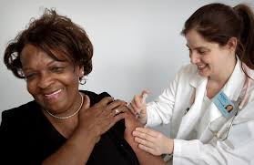
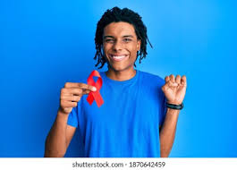
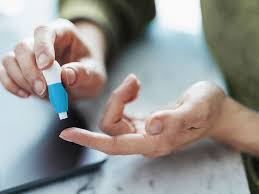
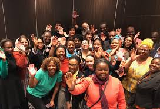
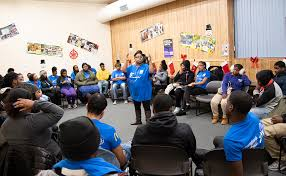
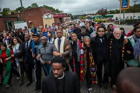

Services provided by the Tsogang Sechaba Community Project are designed to be accessible and available at key times to maximize impact:
Counselling and Psychosocial Support -> Available weekly, Monday through Friday, during working hours (9 a.m. – 5 p.m.).
GBV Intervention and Immediate Support -> Services will be available on-demand with a 24/7 emergency contact for urgent cases.
HIV and STD Testing and Treatment -> These services will be scheduled weekly in collaboration with local health providers to ensure regular access.
Nutritional Support Programs -> Provided daily during weekdays, ensuring that children and vulnerable adults receive meals consistently.
Caregiver Training and Support Groups -> Monthly sessions will be held, with quarterly workshops for advanced skill-building.
Health and Wellness Screenings -> Regular quarterly screenings will be scheduled, with monthly workshops on health and wellness topics.
This comprehensive approach is aimed at building a resilient, healthier community where each individual has access to support for long-term growth and recovery.
Value to the Department in 2025/2026.
In the next financial year, Tsogang Sechaba Community Project will contribute significant value to the Department:
Enhanced Community Health Outcomes:
Increased access to HIV prevention, care, and education will reduce infection rates and improve public health metrics.
Reduction in Gender-Based Violence:
Community awareness campaigns and survivor support services will create safer, more inclusive communities.
Support for Vulnerable Populations:
Provision of psychosocial, nutritional, and empowerment services will foster resilience among children, youth, and caregivers.
Strengthened Community Networks:
Collaboration with local stakeholders will build sustainable networks to address systemic issues like poverty, crime, and substance abuse.
Service Provision Overview
Target Populations:
Children and Youth
Orphaned Vulnerable Children: Serving those who have lost parents to HIV/AIDS or violence.
Young Adults and Youth (Ages 15-24): Focusing on those at risk for HIV, gender-based violence (GBV), and other social challenges.


Survivors of Gender-Based Violence (GBV)
Providing tailored support services for both women and men affected by GBV.
Individuals Living with HIV and STDs
Serving people diagnosed with HIV or STDs who require access to care, treatment, and support services.



Caregivers
Primarily older adults acting as caregivers to children impacted by HIV, GBV, or substance abuse.
Community Members
Broader outreach includes community members seeking health, wellness, education, and nutritional support.



Sustainability Plan
To ensure the long-term viability of services:
Financial Sustainability:
Establish a multi-year funding strategy with diverse income streams, including grants, donor contributions, and corporate sponsorships.
Allocate 15% of all funding to administrative costs to maintain operational efficiency.
Capacity Building:
Continuous training for staff, social workers, and caregivers to enhance their effectiveness and adaptability.
Recruitment of additional professionals and volunteers to meet growing demand.
Community Partnerships:
Strengthen collaborations with government departments, SAPS, and local NGOs to share resources and expertise.
Engage community leaders in program planning and implementation to ensure local relevance and support.
Monitoring and Evaluation:
Implement robust systems to track program outcomes and improve service delivery.
Use data-driven insights to adjust strategies and align with community needs.
Technology Integration:
Expand the use of digital platforms for education, counseling, and support to reach more beneficiaries efficiently.
Develop an online donation platform to attract international funding.
By focusing on these strategic goals, Tsogang Sechaba Community Project will continue to serve as a critical partner to the Department, fostering healthier, safer, and more resilient communities in 2025/2026 and beyond.